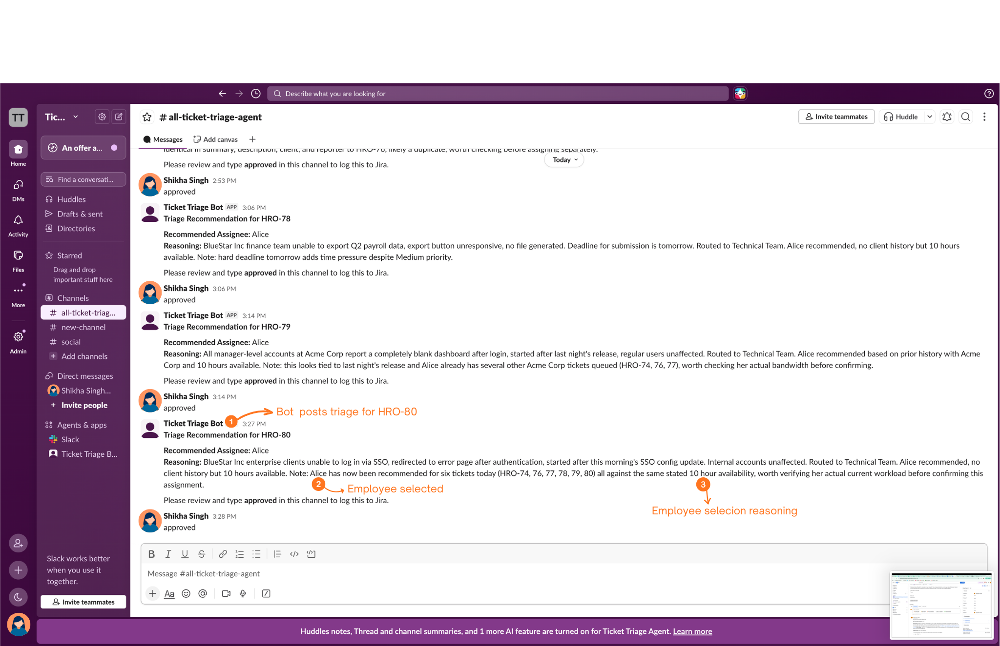
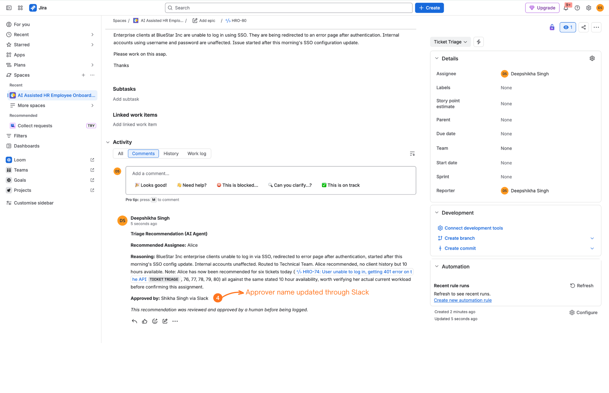

AI agent · MCP · Jira · Slack · Human in the Loop
An AI agent that reads incoming support tickets, evaluates team capacity and client history, and sends a recommendation to Slack. It writes to Jira only after YOU approve.
Smart routing, human in the loop no auto-write without approval
The problem
Someone opens each ticket, reads the description, checks attachments, and figures out what kind of issue it is.
Then they check who is available, who knows the client, who is already overloaded, and who has the right skills.
This process repeats for every single ticket. Repetitive, slow, and pulling your best people away from real work.
Assign to someone without client context and they spend the first hour just understanding the environment.
The flow
The agent fetches the real ticket from Jira. Summary, description, priority, client name, reporter. One API call, all the context.
An LLM reads the unstructured description and classifies it: technical bug, business request, or general question. This is the one step that genuinely needs AI judgment.
Category maps to a team — technical issues to the technical team, billing to finance, general questions to support. A lookup table, not AI guessing.
Who on the team has bandwidth right now? Who has worked with this client before? For critical tickets, the agent can pull someone off lower priority work.
The recommendation goes to your Slack channel with full reasoning. Who, why, and what the ticket is about.
Type "approved" in Slack. The webhook captures the approver's name automatically. Nothing happens to Jira until this step is completed.
A structured comment is posted to the ticket: recommended assignee, reasoning, and the approver's name. Permanent and searchable.
Proof

Steps 1–3 — the agent recommends, you approve. The bot posts the triage recommendation with the matched employee and full reasoning. One word in Slack — "approved" — is the human-in-the-loop gate before anything touches Jira.

Step 4 — Jira updated automatically. The agent writes back the recommended assignee, full reasoning, and the approver's name — captured directly from Slack. No manual copy-paste.
Comparison
There are several AI triage tools in the MCP ecosystem. They classify tickets and suggest routing. This agent goes further: it recommends a specific person based on capacity and client history, and gates every write behind a human-in-the-loop approval.
Classifies issues, assigns P1–P4 priority, suggests routing queue and response templates. No integrations, no assignment.
Auto-labels and reassigns to teams. Agent applies changes directly — no human approval gate.
Classifies and routes with LLM. Explicitly marks "Approval Required: No" in its own configuration.
Universal ticket CRUD across Linear, Jira, GitHub. No triage logic or assignment intelligence.
| Capability | Existing tools | This agent |
|---|---|---|
| Classify ticket type | ✓ | ✓ |
| Route to a team | ✓ | ✓ |
| Recommend a specific person | ✕ | ✓ |
| Check individual availability | ✕ | ✓ |
| Match client relationship history | ✕ | ✓ |
| Severity based override logic | ✕ | ✓ |
| Human-in-the-loop approval gate | ✕ | ✓ |
| Named approver audit trail | ✕ | ✓ |
Built with
Stack
Tools
Evolution
Agent reads real Jira tickets, applies triage logic, sends Slack notification. Approval happens in Claude, then comment is written to Jira.
Human approves directly in Slack. Webhook captures the approver's real display name and writes it to the Jira comment. Fully human-in-the-loop, no manual step needed for approval.
Jira webhook triggers triage automatically on ticket creation. Team availability from live data. Zero manual steps from ticket to recommendation.
Everything is open source. The README explains every design decision, what was scoped out, why, and what comes next.